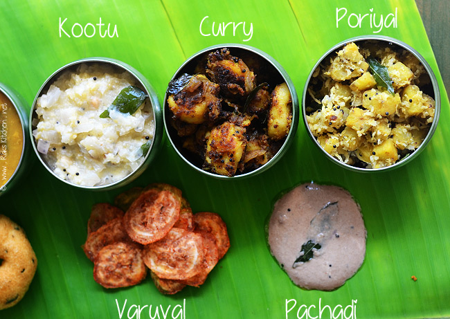
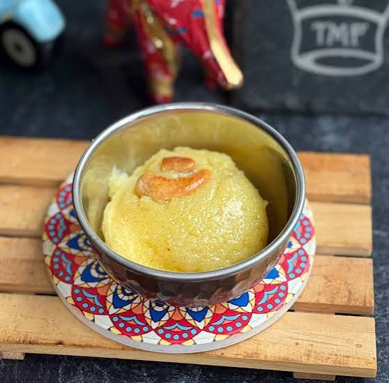
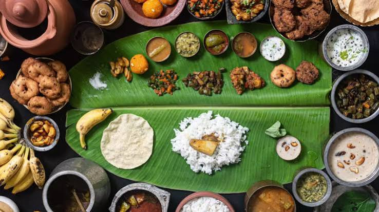

SRI MANGALAMBIGA
Pure Vegetarian Catering
Pure Vegetarian Catering
Where every recipe carries a story, every meal carries tradition and every celebration begins with food.

In Tamil culture, food has always been a beautiful part of celebration, family and togetherness.
From the traditional banana leaf meal to carefully prepared sweets and savouries, every dish has its own place in our culture.
At Sri Mangalambiga Catering, we bring this traditional experience to modern celebrations while keeping the authentic vegetarian taste at the heart of every occasion.
Explore Our MenuWe believe great catering is not just about serving food. It is about creating an experience.
Every menu is thoughtfully prepared with vegetarian ingredients and traditional recipes.
Quality and freshness are at the heart of every dish we prepare.
Traditional flavours inspired by the rich food culture of Tamil Nadu.
We treat every guest with warmth, care and genuine hospitality.
A traditional South Indian feast is not complete without the beautiful banana leaf.
The arrangement of dishes, the aroma of freshly prepared food and the joy of sharing a meal together create an experience that connects generations.
Traditional presentation
Authentic South Indian flavours
Warm and memorable hospitality

A complete vegetarian feast inspired by the traditional South Indian meal.

Traditional sweet flavours that add happiness to every celebration.

Familiar flavours prepared with care, freshness and authentic taste.
Sri Mangalambiga Catering
Let us create a traditional vegetarian feast for your next special occasion.
Book Your Catering